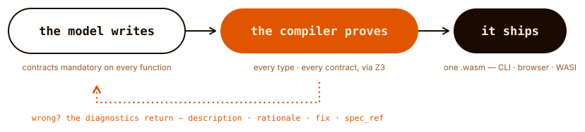

.tmbundle.
A programming language designed for LLMs to write, not humans.
From the Latin veritas — truth. In Vera, verification is a first-class citizen.
From the Latin veritas — truth. In Vera, verification is a first-class citizen.
Programming languages have always co-evolved with their users. Assembly emerged from hardware constraints. C from operating systems. Python from productivity needs. If models become the primary authors of code, it follows that languages should adapt to that too.
The biggest problem models face isn't syntax — it's coherence over scale. Models are pattern matchers optimising for local plausibility, not architects holding the entire system in mind.
The empirical literature shows models are particularly vulnerable to naming-related errors: choosing misleading names, reusing names incorrectly, and losing track of which name refers to which value. Vera addresses this by making everything explicit and verifiable.
The model doesn't need to be right. It needs to be checkable. Names are replaced by structural references. Contracts are mandatory. Effects are typed. Every function is a specification the compiler verifies against its implementation.

For deeper questions about the design — why no variable names, what gets verified, how Vera compares to Dafny, Lean, and Koka — see the FAQ.
Nothing is implicit. The signature declares types, preconditions, postconditions, and effects. The compiler verifies the contract via SMT solver. Division by zero is not a runtime error — it is a type error.
public fn safe_divide(@Int, @Int -> @Int) requires(@Int.1 != 0) ensures(@Int.result == @Int.0 / @Int.1) effects(pure) { @Int.0 / @Int.1 }
public fn fizzbuzz(@Nat -> @String) requires(true) ensures(true) effects(pure) { if @Nat.0 % 15 == 0 then { "FizzBuzz" } else { if @Nat.0 % 3 == 0 then { "Fizz" } else { if @Nat.0 % 5 == 0 then { "Buzz" } else { "\(@Nat.0)" } } } }
public fn classify_sentiment(@String -> @Result<String, String>) requires(string_length(@String.0) > 0) ensures(true) effects(<Inference>) { let @String = string_concat("Classify as Positive, Negative, or Neutral: ", @String.0); Inference.complete(@String.0) }
public fn research_topic(@String -> @Result<String, String>) requires(string_length(@String.0) > 0) ensures(true) effects(<Http, Inference>) { let @String = url_encode(@String.0); let @Result<String, String> = Http.get(string_concat("https://api.duckduckgo.com/?format=json&q=", @String.0)); match @Result<String, String>.0 { Ok(@String) -> Inference.complete(string_concat("Summarise this in one paragraph:\n\n", @String.0)), Err(@String) -> Err(@String.0) } }
[E001] Error at main.vera, line 14, column 1: { ^ Function is missing its contract block. Every function in Vera must declare requires(), ensures(), and effects() clauses between the signature and the body. Vera requires all functions to have explicit contracts so that every function's behaviour is mechanically checkable. Fix: Add a contract block after the signature: private fn example(@Int -> @Int) requires(true) ensures(@Int.result >= 0) effects(pure) { ... } See: Chapter 5, Section 5.2 "Function Declaration Syntax"
Kimi K2.5 writes 100% correct Vera — beating its own 86% on Python and 91% on TypeScript.

A 50-problem benchmark across 5 difficulty tiers — pure arithmetic, ADTs, recursion, closures, multi-function effect propagation. Six models, three providers, four modes each. The chart below shows run-correct rates; green shows wins for Vera.
| Model | Vera | Python | TypeScript |
|---|---|---|---|
| Kimi K2.5 flagship | 100% | 86% | 91% |
| GPT-4.1 flagship | 91% | 96% | 96% |
| Claude Opus 4 flagship | 88% | 96% | 96% |
| Kimi K2 Turbo sonnet | 83% | 88% | 79% |
| Claude Sonnet 4 sonnet | 79% | 96% | 88% |
| GPT-4o sonnet | 78% | 93% | 83% |
In our latest results Kimi K2.5 writes perfect Vera code — 100% run_correct, beating both Python (86%) and TypeScript (91%), alongside that we see that Kimi K2 Turbo also writes better Vera than TypeScript. While in our previous v0.0.4 benchmark, Claude Sonnet 4 wrote Vera better than TypeScript (83% vs 79%) this result flipped in the latest v0.0.7 re-run above illustrating the variance inherent in single-run evaluation and model non-determinism.

Mandatory contracts and typed slot references appear to provide enough structure to compensate for zero training data. Still early days — 50 problems, single run per model. Stable rates will require pass@k evaluation with multiple trials.
Results from VeraBench v0.0.7 against Vera v0.0.108. Inspired by HumanEval, MBPP, and DafnyBench.
Design principles
vera fmt settles it.@T.n), not arbitrary names.Key features
@T.n) replace variable names: @Int.0 is the most-recent Int binding, @Int.1 the one before. The whole class of naming hallucinations is removed at the language level, not caught after the fact.n”.Inference.complete is an algebraic effect — typed, contract-verifiable, mockable. Anthropic, OpenAI, Moonshot, Mistral.<Async> effect and compose with the rest of the effect system.<HttpServer> effect marks a total handle(Request -> Response). The accept loop lives in the host, so every handler contract is an ordinary proof obligation. vera serve runs it.vera compile --target wasi-p2 emits a component any stock wasip2 host runs (experimental; IO and Random surface). --world server packages a handler as a wasi:http component for wasmtime serve.Vera compiles to WebAssembly. The same .wasm runs at the command line via wasmtime, in any browser with a self-contained JS runtime, or as a portable WASI 0.2 component under any stock wasip2 host.
$ vera run examples/hello_world.vera Hello, World! $ vera run examples/factorial.vera --fn factorial -- 10 3628800
vera run compiles to WASM and executes via wasmtime. --fn picks any public function; arguments follow --.
$ vera compile --target browser \
examples/hello_world.vera
Browser bundle: examples/hello_world_browser/
module.wasm
runtime.mjs
index.html
Self-contained — no bundler. Serve with any HTTP server (python -m http.server). IO.print writes to the page; all other operations work identically to the CLI. Parity tests enforce this on every PR. Note: Inference.complete errors in the browser — use a server-side proxy via Http.
$ vera compile --target wasi-p2 --world server \ examples/http_server.vera Compiled (WASI Preview 2 server component (run with: wasmtime serve <file>)): examples/http_server.wasm $ wasmtime serve examples/http_server.wasm Serving HTTP on http://0.0.0.0:8080/
--target wasi-p2 emits a WASI 0.2 component any stock wasip2 host runs — wasmtime run module.wasm needs no flags and no Vera bindings (experimental; the IO and Random surface). --world server packages a handle(Request -> Response) program as a wasi:http component that wasmtime serve runs unmodified.
Python 3.11+ and Git. Everything else installs into a virtual environment.
# Clone and install git clone https://github.com/aallan/vera.git cd vera python -m venv .venv source .venv/bin/activate pip install -e ".[dev]" # Check, verify, run, compile vera check examples/absolute_value.vera vera verify examples/safe_divide.vera vera run examples/hello_world.vera vera compile --target browser examples/hello_world.vera
.tmbundle.vera lsp automatically for .vera files.Live proof-aware diagnostics, hover, slot go-to-definition, and typed-hole completion come from the language server — included in the install above (standalone: pip install -e ".[lsp]"). Any editor with a generic LSP client can point at vera lsp directly.
Every document here has an alternate in markdown, served on the same domain, discoverable through standard <link rel="alternate">, llms.txt, and the Mintlify llms-txt / llms-full-txt conventions.
builtins/effects/errors introspection commands.Claude Code discovers SKILL.md and CLAUDE.md automatically when working inside the repo. For other projects, install the skill manually:
mkdir -p ~/.claude/skills/vera-language cp /path/to/vera/SKILL.md ~/.claude/skills/vera-language/SKILL.md
For other models: point them at SKILL.md via system prompt, file attachment, or retrieval. It's self-contained and works with any model that reads markdown.
The documents above are how machines read Vera. The language server is how they interrogate it: vera lsp holds a warm, incremental Z3 session between edits, and four custom methods — vera/speculativeEdit, vera/proposeEdit, vera/strengthenContract, vera/addEffect — let an agent learn whether an edit keeps, breaks, or strengthens a program's proofs before committing it, then apply it only through the verification gate.
# vera/speculativeEdit — the proof delta for an in-memory edit { "ok": true, "proof_delta": { "newly_discharged": ["..."], "newly_undischarged": [], "timed_out": [], "removed": [], "unchanged": 11 }, "diagnostics": 0 }
A complete compiler with 164 built-in functions, nine algebraic effects (IO, Http, HttpServer, State, Exceptions, Async, Inference, Random, Diverge), contract-driven testing via Z3, a language server with agent-facing proof deltas, and a 14-chapter specification. A 143-program conformance suite and 37 worked examples are validated against the spec on every pull request. All of it is developed openly on GitHub and released under the MIT licence.